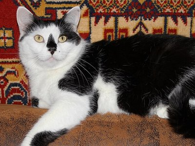
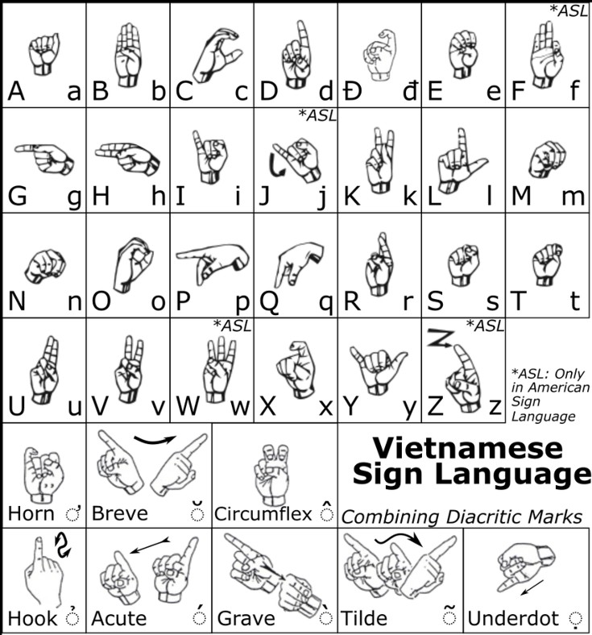
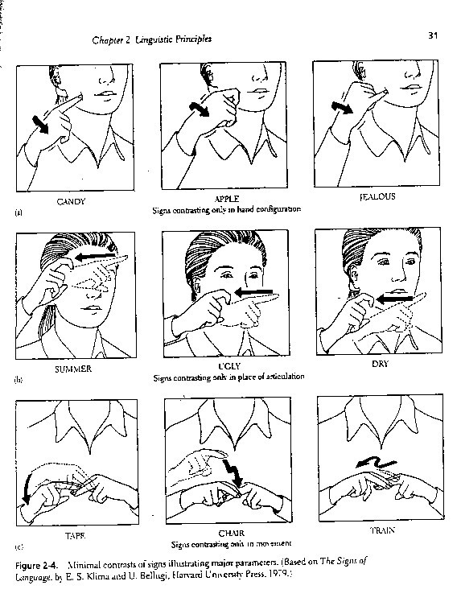

Nhận thức,
Ngôn ngữ và Tư duy
AIT3018 · Học kỳ I, năm học 2026-2027
Viện Trí tuệ nhân tạo · Trường Đại học Công nghệ, ĐHQGHN
Bài 8
Cấu trúc của ngôn ngữ
Tiếng Việt chỉ sử dụng 6.142 âm tiết. Vì sao từ số âm tiết hữu hạn ấy có thể tạo ra vô số câu?
Theo Đoàn Thiện Thuật và Cao Xuân Hạo, âm tiết tiếng Việt gồm 23 âm đầu, 16 âm chính, 8 âm cuối và 6 thanh điệu. Số âm tiết thực dùng theo Trần Thị Minh Phương (1991).
Dąbrowska trong bài đọc
Từ 1 đến 5 tuổi, một đứa trẻ nghe khoảng bao nhiêu từ: vài trăm nghìn, vài triệu hay vài chục triệu?
khoảng 42 triệu từ
Thảo luận: UG và ba lập luận
- Dąbrowska định nghĩa Ngữ pháp phổ quát (Universal Grammar, UG) như thế nào? Bà muốn nói gì khi cho rằng “không có định nghĩa rõ ràng hay sự đồng thuận” về những gì UG thực sự chứa?
- Ba lập luận chính thường được dùng để ủng hộ sự tồn tại của UG là gì, và Dąbrowska đánh giá từng lập luận ra sao? (Gợi ý: tính phổ quát, sự hội tụ, và sự nghèo nàn của kích thích.)
- Theo Dąbrowska, bằng chứng nào thách thức lập luận “hội tụ”, tức ý rằng mọi người bản ngữ đều đạt được cùng một ngữ pháp? Những khác biệt cá nhân trong tri thức ngôn ngữ khớp vào phê phán này như thế nào?
- Dąbrowska đưa ra những ví dụ nào để nghi vấn tính phổ quát của các đặc điểm ngôn ngữ giữa các ngôn ngữ? Những ví dụ này có làm yếu khẳng định rằng có một ngữ pháp chung, bẩm sinh không?
Thảo luận: thay thế và hệ quả
- Dąbrowska diễn giải lại lập luận “sự nghèo nàn của kích thích” như thế nào? Bà có cho rằng đầu vào ngôn ngữ của trẻ thực sự không đủ để học ngữ pháp không? Vì sao?
- Dąbrowska đề xuất cách giải thích thay thế nào cho khả năng học ngôn ngữ của con người mà không cần UG? Các cơ chế nhận thức chung (domain-general) hay các thiên hướng học tập có thể thay thế vai trò của UG như thế nào?
- Bác bỏ UG có những hệ quả rộng hơn nào cho lý thuyết ngôn ngữ học và khoa học nhận thức? Sự chuyển hướng này sẽ thay đổi cách chúng ta nghiên cứu việc thụ đắc ngôn ngữ và sự đa dạng ngôn ngữ ra sao?
- Bạn có đồng ý với quan điểm của Dąbrowska rằng lý thuyết ngôn ngữ học đã coi UG như một niềm tin hơn là một giả thuyết có thể kiểm chứng không? Nghiên cứu tương lai có thể làm cuộc tranh luận về UG mang tính thực nghiệm và dựa trên bằng chứng hơn như thế nào?
Nội dung buổi học
- Ngữ âm học và âm vị học
- Hình thái học và cú pháp học
- Ngữ nghĩa học và ngữ dụng học
- Ngôn ngữ ký hiệu
Âm thanh → âm vị → từ → câu → nghĩa → ý định; cuối buổi đối chiếu với ngôn ngữ ký hiệu
Ngôn ngữ và các tầng cấu trúc
“Đề thi dễ quá nhỉ!”
Ngôn ngữ ký hiệu không dùng âm thanh. Ngôn ngữ này có những tầng nào?
Ngữ pháp
Không ai dạy người Việt phải nói “cái bàn này” chứ không nói “này bàn cái”. Tri thức đó đến từ đâu?
Regex cho dấu ngoặc cân bằng
Viết một biểu thức chính quy (regex) khớp mọi chuỗi ngoặc cân bằng và không khớp chuỗi nào khác.
()(())()(())((())))((()())(((())Regex thuần không làm được: phải đếm độ sâu lồng không giới hạn, mà máy trạng thái hữu hạn (finite automaton) không nhớ được độ sâu tùy ý.
Câu tiếng Việt cũng lồng nhau như ngoặc: “Con chuột [mà con mèo [mà bé Na nuôi] đuổi] đã trốn mất.”
Phân cấp Chomsky
Chomsky (1956) đặt câu hỏi ngôn ngữ học: ngôn ngữ tự nhiên cần loại văn phạm mạnh đến đâu?
1.
Ngữ âm học và âm vị học
Phonetics và phonology: từ sóng âm đến âm vị trong đầu người nghe
Ngữ âm học
Ngữ âm học (phonetics): âm thanh lời nói đi từ miệng đến tai. Đơn vị: âm tố (phone).
Hiệu ứng McGurk
Âm thanh giữ nguyên, chỉ khẩu hình miệng thay đổi: điều mắt thấy làm thay đổi điều tai nghe.
Bảng chữ cái ngữ âm quốc tế (IPA)
Vì sao từ điển tiếng Anh cần phiên âm, còn từ điển tiếng Việt thì không?
Nghe phát âm IPA: video 1, video 2. Bảng IPA tiếng Việt.
Âm tố, âm vị và biến thể âm vị
hai âm tố (phone) là biến thể âm vị (allophone)
đổi một âm, đổi nghĩa: cặp tối thiểu (minimal pair), hai âm vị
Tiếng Anh coi [tʰ] và [t] là một âm vị. Tiếng Việt thì sao?
Một âm vị hay hai âm vị?
một âm vị[tʰ] top, [t] stop
tự do“either” đọc [iː] hay [aɪ] đều được
Giọng Hà Nội đọc “tre” và “che” như nhau, giọng miền Nam thì không. Tr và ch là một hay hai âm vị?
Cặp tối thiểu trong tiếng Việt
ba · bà · bá · bả · bã · bạ
Sáu tiếng trên khác nhau ở yếu tố nào?
Khác thanh điệu: đổi thanh là đổi từ.
Âm vị học
Tiếng Anh không có từ nào bắt đầu bằng [ŋ]. Người Anh sẽ đọc tên “Ngọc” thế nào?
Ngôn điệu và yếu tố siêu đoạn tính
Trọng âm: REcord (danh từ), reCORD (động từ).
Ngữ điệu: “Hôm nay có kiểm tra.” và “Hôm nay có kiểm tra?”
Nhịp điệu: độ dài, chỗ ngắt của lời nói.
Thanh điệu: đổi cao độ là đổi từ.
Đường tím: giọng lên hay xuống khi đọc mỗi tiếng (càng cao trong ô, giọng càng cao).
Ngữ âm học trong AI
ASR
TTS
Mô hình nhận diện cảm xúc qua giọng học trên tiếng Anh sẽ nhầm điều gì khi gặp tiếng Việt?
2.
Hình thái học và cú pháp học
Morphology và syntax: ghép hình vị thành từ, ghép từ thành câu
Hình thái học
Hình vị
Hình vị (morpheme): đơn vị nhỏ nhất mang nghĩa hoặc chức năng ngữ pháp.
đứng một mình được
Tiếng Anh có 8 phụ tố biến tố; tiếng Việt không có.
“Học sinh” gồm mấy hình vị? “Cà phê” gồm mấy hình vị?
“Học sinh”: hai hình vị. “Cà phê”: một hình vị, hai âm tiết.
Hình tố và biến thể hình vị
Hình tố (morph) là cách một hình vị được phát âm; các hình tố của cùng một hình vị là biến thể hình vị (allomorph).
Âm đứng trước quyết định: sau âm vô thanh đọc [s], sau âm hữu thanh đọc [z].
Âm vị, chữ viết và hình vị
“Nghề” có bốn chữ cái nhưng chỉ hai âm vị. Hệ thống chuyển chữ thành giọng nói cần biết gì?
Các cách tạo từ mới
Láy có quy tắc: “trắng” → “trăng trắng”, không ai nói “trắng trăng”.
Từ mới thời COVID-19
Đoán số token
Tokenizer của GPT-4o cắt mỗi chuỗi dưới đây thành bao nhiêu token?
| “strawberry” | 3 strawberry |
| “Vietnam” | 1 Vietnam |
| “Việt Nam” | 3 Việt·Nam |
| “Đề thi dễ quá nhỉ!” | 8 Đề·thi·dễ·quá·nhỉ! |
Token không trùng với hình vị: straw + berry bị cắt thành st | raw | berry.
Dấu · là khoảng trắng đứng trước token. Đo bằng tiktoken, bảng o200k_base, ngày 30/10/2026. Các bạn có thể tự thử trên trang tiktokenizer.
Hình thái học trong NLP
Câu “Bàn là của mẹ.” có thể tách từ theo những cách nào?
“bàn là | của | mẹ”: cái bàn ủi của mẹ. “bàn | là | của | mẹ”: cái bàn thuộc về mẹ.
Trật tự từ và biến cách
Biến cách (declension): danh từ đổi đuôi theo vai trong câu.
Danh từ tiếng Việt không đổi đuôi. Vai trò ngữ pháp được thể hiện bằng gì?
Các loại cây ngữ pháp
Cây thành tố gom từ thành cụm; cây phụ thuộc nối thẳng từ với từ, động từ làm gốc.
Luật cấu trúc cụm từ
S → NP VPNP → (Det) (Adj) NVP → V (NP) (PP)PP → P NP
S câu · NP cụm danh từ · VP cụm động từ · PP cụm giới từ · Det từ hạn định · Adj tính từ · N danh từ · V động từ · P giới từ. Ngoặc tròn: tùy chọn.
Tiếng Việt nói “con chó to”, không nói “to con chó”. Luật NP → (Det) (Adj) N có áp dụng được cho tiếng Việt không?
Cây cú pháp và nhập nhằng
Cùng một chuỗi từ, hai cây, hai nghĩa: nhập nhằng cú pháp. Một từ nhiều nghĩa, như “bank”, là nhập nhằng từ vựng.
Đếm số cách hiểu
Câu “I saw the man on the hill with a telescope.” có thể hiểu theo bao nhiêu cách?
Cả năm cây đều hợp ngữ pháp; chọn cây nào phải nhờ ngữ cảnh.
Máy phân tích cú pháp chọn cây nào?
Đưa câu “I saw the man on the hill with a telescope.” vào một bộ phân tích cú pháp. Máy trả về mấy cây?
Đúng một cây. Bộ phân tích chọn một cách gắn cho mỗi cụm, không báo rằng câu nhập nhằng.
Ngữ pháp cải biến (Chomsky)
“Colorless green ideas sleep furiously” (1957): đúng cú pháp nhưng vô nghĩa.
Mô hình cấu trúc sâu và bề mặt năm 1965; chương trình tối giản của chính Chomsky (1995) bỏ hai tầng này.
Cú pháp và não bộ

Broca là một nút trong mạng, không phải hộp ngữ pháp riêng.
Cú pháp trong AI
Câu trích từ bản tin VNU-UET, 26/9/2025.
GPT không dựng cây cú pháp tường minh. Phân tích cú pháp còn để làm gì?
3.
Ngữ nghĩa học và ngữ dụng học
Semantics và pragmatics: điều câu nói ra và điều người nói muốn
Ngữ nghĩa học

Vật quy chiếuNgữ nghĩa học (semantics): nghĩa trong ngôn ngữ, ở ba mức.
Nghĩa của từ (ngữ nghĩa từ vựng)
Nghĩa của câu (ghép từ nghĩa các từ)
Nghĩa trong ngữ cảnh (nối sang ngữ dụng học)
Mô hình chỉ học từ văn bản nắm được những cạnh nào của tam giác này?
Bảy loại nghĩa (Leech)
“Ông ấy mất rồi” và “Ông ấy chết rồi” khác nhau ở loại nghĩa nào?
Quan hệ nghĩa
“Bánh xe” và “xe đạp” có quan hệ gì? “Xe đạp” và “phương tiện” thì sao?
Nhập nhằng về nghĩa
Câu “Everyone didn’t go.” có thể hiểu theo những cách nào?
Chơi chữ và nhập nhằng
Mạng ngữ nghĩa và AI
Mạng ngữ nghĩa: nút là khái niệm, cạnh là quan hệ.
WordNet: quan hệ giữa các từ.
ConceptNet: tri thức thường thức, có người nhập tay.
Ascent, Ascent++: trích tự động từ web.
Đồ thị tri thức: tìm kiếm, hỏi đáp.
Trên web, “murdered” (bị giết) hay “breathed” (thở) xuất hiện nhiều hơn?
“murdered”: 2.843.529 lần; “breathed”: 725.034 lần.
Ngữ dụng học
Ngữ dụng học (pragmatics): nghĩa do ngữ cảnh và ý định người nói tạo nên.
Một tin nhắn không rõ người gửi. Cần thêm những thông tin gì để hiểu câu này?
Phương châm hội thoại của Grice
Grice (1975): khi trò chuyện, ta mặc định người kia hợp tác, theo bốn phương châm.
Lịch sự (politeness) không phải phương châm của Grice; đó là nguyên tắc Leech đề xuất về sau.
Chấm điểm trợ lý ảo
Mỗi câu trả lời dưới đây vi phạm phương châm nào?
Hàm ngôn
“nhưng” ngầm đối lập hai vế
Người trả lời không nói “chưa xong”. Vì sao người nghe vẫn hiểu là chưa xong?
Quảng cáo và phương châm Grice
Câu quảng cáo này khiến người nghe tin vào điều gì mà nó không trực tiếp khẳng định?
Phương châm lượng: không nói đã hỏi bao nhiêu người, chọn họ thế nào. Người nghe tự điền: “gần như mọi nha sĩ”.
Hai câu quảng cáo khác để phân tích: “Không chất bảo quản.” “Giá chỉ từ 199.000 đồng.”
Hành vi ngôn từ trong hội thoại
Hành vi ngôn từ: Austin (1962), Searle (1976).
Một em bé chỉ nói “Bánh!”. Dựa vào đâu người lớn biết bé đang gọi tên hay đang đòi?
Ngữ dụng học trong AI
Người dùng nói với trợ lý ảo: “Tối quá.” Trợ lý có nên bật đèn không?
4.
Ngôn ngữ ký hiệu
Sign language: khi bỏ hẳn kênh âm thanh
Ngôn ngữ ký hiệu là gì?

Mang nghĩa bằng bốn kênh:
Có từ vựng và ngữ pháp riêng, không phải tiếng nói diễn lại bằng tay.
Mỹ và Anh cùng nói tiếng Anh. Người Điếc hai nước có hiểu ký hiệu của nhau?
Phần lớn là không: ASL gần ký hiệu Pháp, BSL thuộc họ khác.
Cấu trúc của ngôn ngữ ký hiệu
Động tác nhướn mày mang chức năng cảm xúc hay chức năng ngữ pháp?
Máy nhìn ngôn ngữ ký hiệu
- Bật camera, giơ tay: máy vẽ 21 điểm khớp mỗi bàn tay.
- Giữ tay yên, nhướn mày.
- Bấm “Thêm kênh nét mặt”.
- Nhướn mày lần nữa.
Chỉ với kênh bàn tay, máy có phân biệt được câu kể và câu hỏi có hay không?
Không. Dấu hiệu câu hỏi nằm ở nét mặt; phải thêm kênh khuôn mặt.
So sánh ký hiệu ASL

Cặp tối thiểu: đổi một yếu tố là đổi nghĩa, như “tai” và “thai”.
Cơ sở nhận thức và thần kinh
Bán cầu trái: Broca và Wernicke hoạt động, như với tiếng nói.
Bán cầu phải: thêm phần không gian và nét mặt.
Nhận thức: trí nhớ thị giác không gian, chú ý.
Người Điếc bị tổn thương vùng Broca sẽ gặp khó gì khi ra ký hiệu?
Hiểu nhầm và thực tế
Người Điếc, không phải “câm điếc”: họ có ngôn ngữ.
Sáu tầng cấu trúc và AI
Mô tả cấu trúc và giải thích nguồn gốc của cấu trúc là hai việc khác nhau.
Quiz cuối buổi 8
Mở Quiz cuối buổi 8 trên Canvas.
8 câu về ngữ âm học, âm vị học, hình thái học, cú pháp học, ngữ dụng học và ngôn ngữ ký hiệu. Làm một lần.
Bài đọc trước Buổi 9
- Lakoff và Johnson (1980): Conceptual Metaphor in Everyday Language. The Journal of Philosophy.
- Làm Quiz bài đọc 8 trước 23:59 thứ Ba, 10/11/2026. Quiz hỏi về bài đọc, không hỏi về slide hôm nay.
Đọc kỹ ba mục đầu và phần phân loại các kiểu ẩn dụ.
Nếu tranh luận không được hình dung như một cuộc chiến mà như một điệu nhảy, cách chúng ta tranh luận sẽ thay đổi thế nào?
Hạn nộp tiểu luận giữa kỳ: 23:59 Chủ nhật, 15/11/2026.